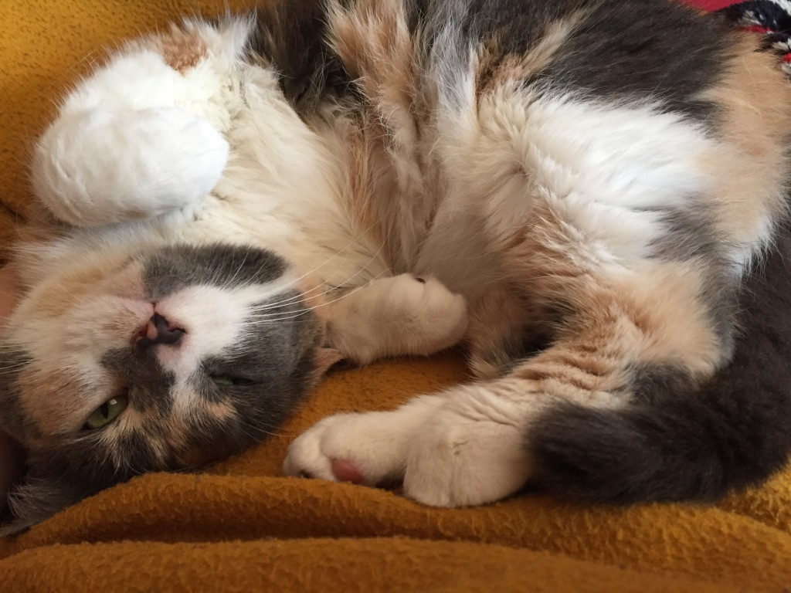
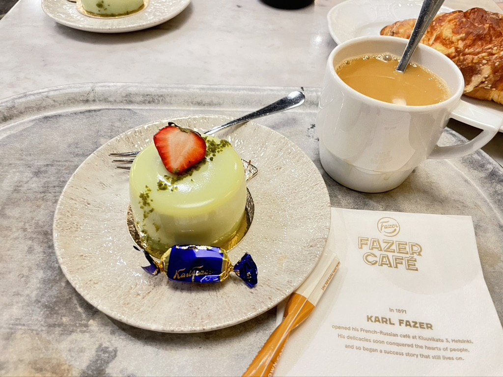

Take a look at the carousel below to see some of my interests!

Libraries
I love going to see beautiful libraries, and I was very happy to see Oodi, Helsinki's central library, this summer.

Cats
This is my family cat Jackie. She is a menace (and loves chewing cables), but she definitely photographs well.
Hiking
I really like walking in nature, and love seeing the fall leaves here in Quebec. This photo is from fall 2025 in St. Adèle, Quebec.

Desserts
As much as I love baking, I also love trying new desserts at cafes and bakeries, especially things that are too labour-intensive to do at home. This dessert, a strawberry pistachio mousse cake, would definitely require a lot of work!